Capture entire web pages — full page, scroll, region, or element picker — then annotate with pro tools and export as PNG, JPEG, PDF, or vector SVG. Every PNG comes back editable when you drop it in again.
New in 1.8: record a tab, window or screen and save it as a video or GIF, one-click Smart crop, an object blur brush that follows what you paint, Ask questions about a capture, OCR in 19 more languages, alt text inside your PNGs, and settings sync across your browsers.
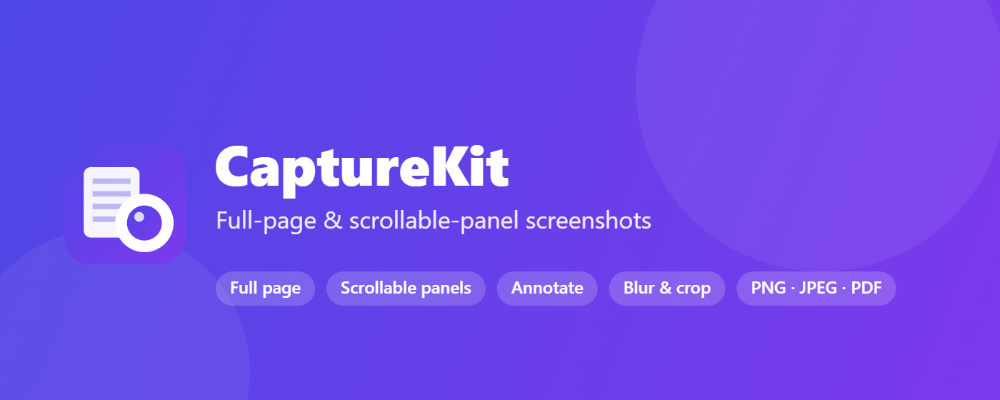
Nine screens from the extension. Click through to see capture, annotate, Smart Redact, Smart Caption, options, privacy, element picker, history, and scrolling capture.
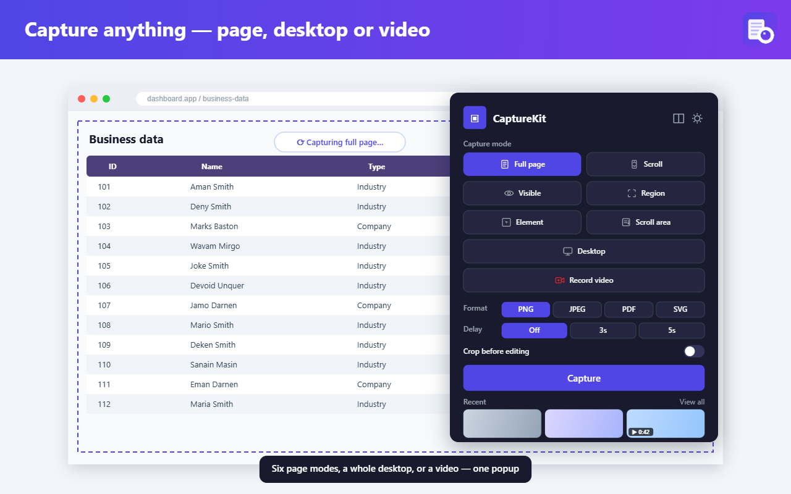
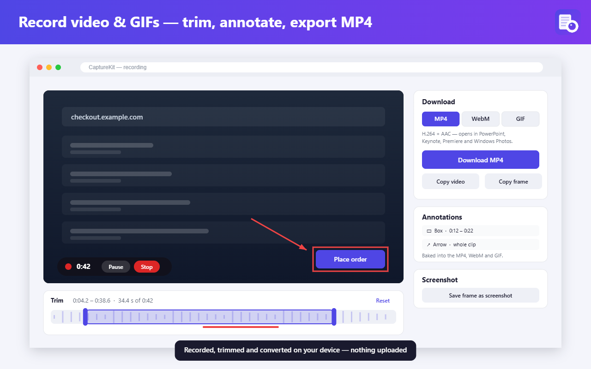
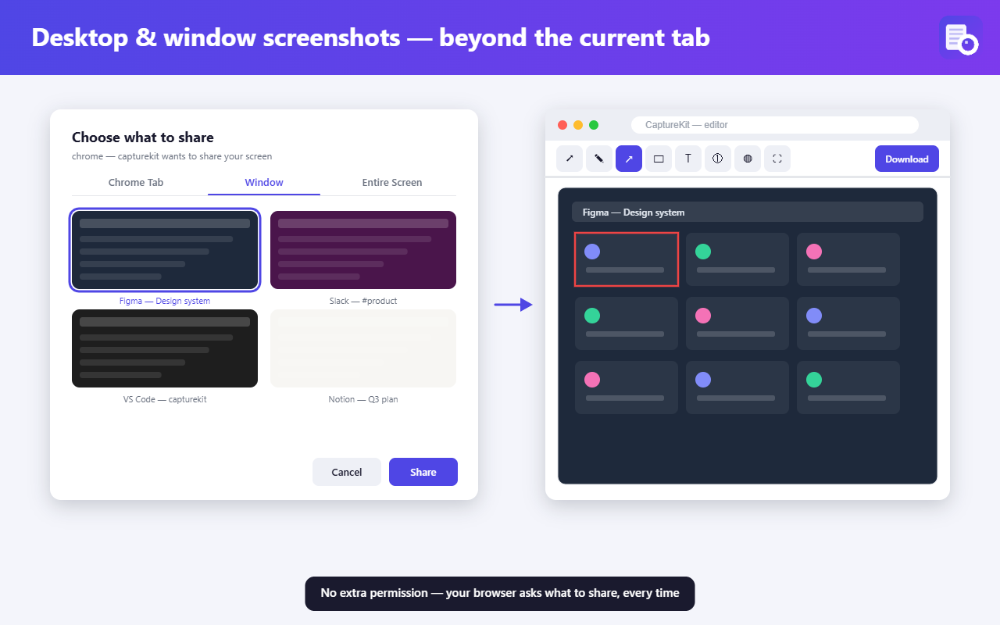
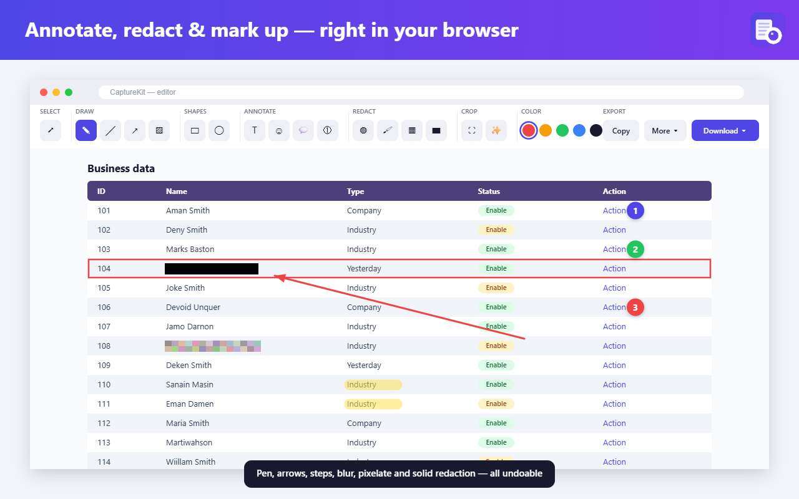
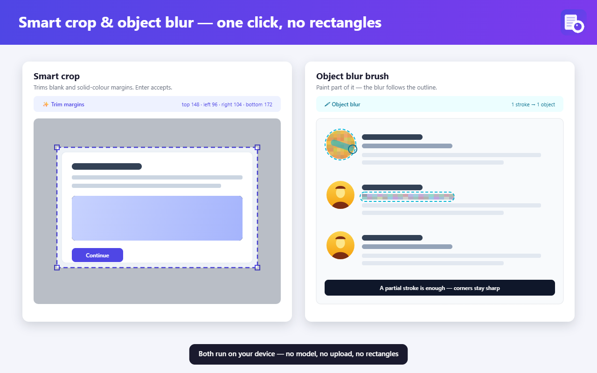
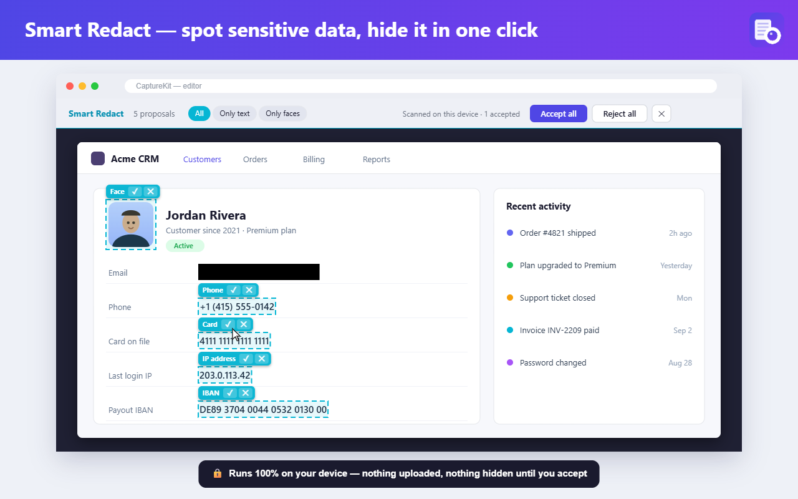
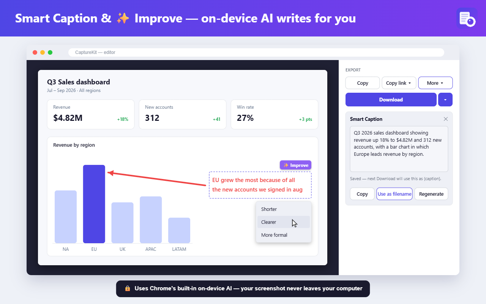
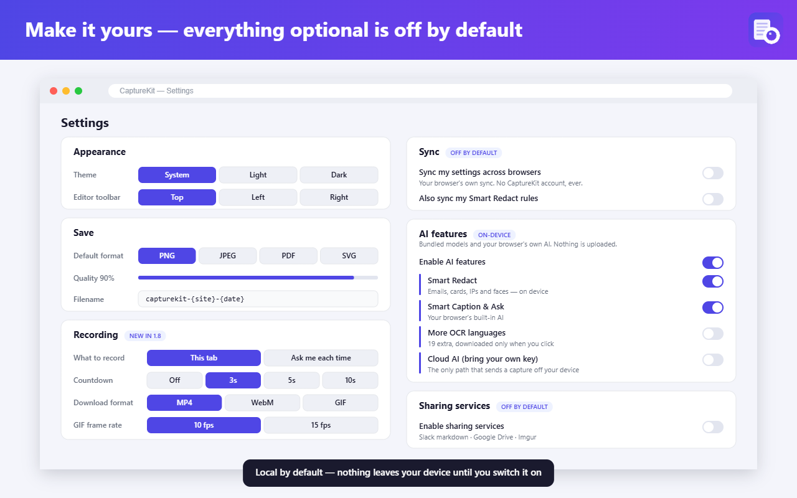
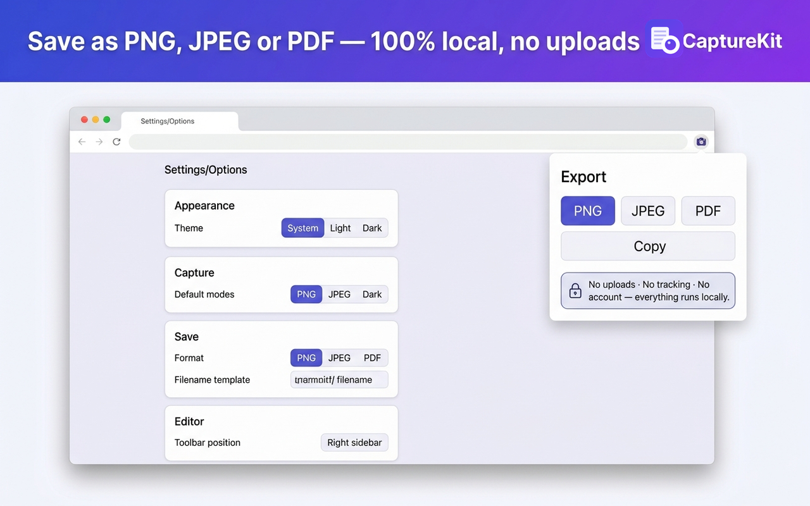
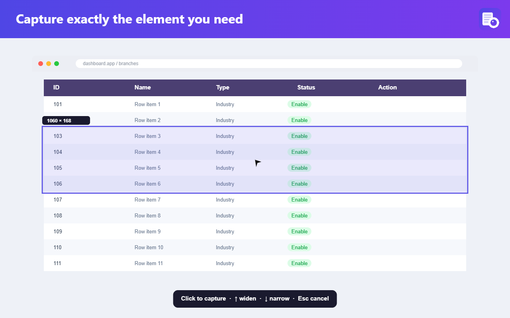
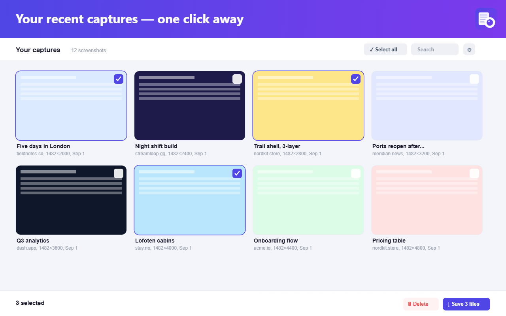
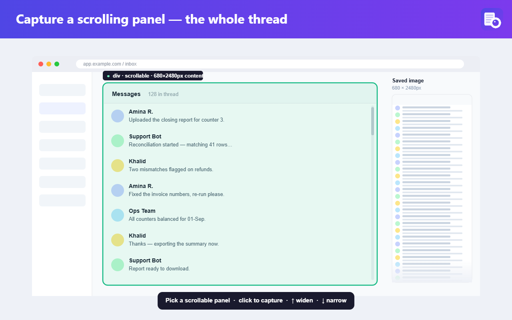
Popup: pick a capture mode (full page, scroll, visible, region, element, scroll area).
Capture, annotate, and hand off — without leaving your browser or your privacy.
Full page, scroll region, visible area, drawn box, element picker, scrollable inner containers, timer. Works on app-shell apps like Jira, Notion, Gmail and Linear where the whole page lives inside an inner scroll container.
Pen, arrows, shapes, callouts, text with pill/outline, step markers, stamps, blur, pixelate, redact, spotlight.
Marquee, shift-click, group move, align, distribute, snap guides, lock/hide, z-order.
Save any tool's exact look — color, size, opacity, dash, heads — as a named preset for one-click reuse.
Free, 1:1, 4:3, 16:9, 9:16, Twitter card, OG card, LinkedIn — enforced to the pixel on export.
Record the tab you're on, or pick any tab, window or your whole screen. Keep the sound and your mic, pause and stop from a floating bar you can drag anywhere, then trim the clip and save it as MP4, WebM or an animated GIF — or send any frame to the editor. All on your device.
Capture anything on your computer, not just a browser tab: another app’s window, a second tab, or a whole screen. It opens in the same editor with the same tools, and it needs no extra permission — your browser’s own picker is the consent step.
The same arrows, boxes, text, step numbers, blur and spotlight you use on screenshots — now on a recording, and each one can appear only for the seconds it matters. Blur and pixelate follow the frame underneath, so they keep covering something that moves. Everything is baked into the WebM, the GIF and any frame you save.
Paint over an avatar, logo or email and the blur follows that object's outline, not a rectangle. Faces get a face-shaped blur, all on-device.
One click fits the crop box to your content, trimming blank or solid-color margins. Press Enter to accept.
"What does this screenshot show?" "Any errors?" Chat about a capture with your browser's built-in on-device AI. Nothing is uploaded.
Smart Redact reads German, French, Spanish, Russian, Arabic, Hindi, Chinese, Japanese, Korean and more. Download only the languages you need.
It knows emails, cards and faces. Teach it your employee-ID format, project codenames or internal hostnames — as keywords or patterns — plus a "never flag this" list. Skip the same kind three times and it offers to stop suggesting it. Rules export as a JSON file your team can share, and never leave your device.
No built-in AI in your browser? Add your own Anthropic, OpenAI or Gemini API key and Caption, ✨ Improve and Ask… work anywhere. Off until you add a key — and Smart Redact never uses it.
Every PNG carries your shapes as compressed metadata. Drop it back in later and every shape is editable again. New in 1.8: it can also carry your Smart Caption as standard alt text (PNG Description + XMP) for tools that read it.
One click proposes redact / pixelate boxes over emails, phone numbers, credit cards, IPs, IBANs, and faces. You review each proposal before it commits. Runs entirely on your device — no uploads. Reads English out of the box; new in 1.8: add German, French, Japanese and 16 more languages with one click each in Settings.
Pick the step tool, choose All buttons or All links, and numbered step markers are proposed in reading order. Review them, accept, then drag to adjust. One undo removes the whole batch.
Download as SVG and every annotation stays a real vector object — editable text, arrows, shapes, and callouts in Inkscape, Illustrator, or Figma — over one image layer of your capture.
Save a watermark, a corner badge, or a set of step markers once. Add it to any capture with one click, and it lands in the same corner even when the screenshot is a different size.
Press 1–9 to switch tools and hold Space to pan. Shapes snap to each other's centers and to the screenshot's edges. Text can have superscripts and subscripts, and the eyedropper picks up a shape's exact color.
Copy image, copy data/blob URL, native share sheet, Reopen (drop, pick, or paste), Copy path after download.
Copy Slack-ready markdown or save to your own Google Drive. Off by default; each service is a separate toggle. Settings lets you connect and test Drive (on Edge, a short guided setup with your own Google client).
Carry your preferences, style presets and shape templates to every browser you sign into — on your browser's own sync, the one already carrying your bookmarks. No CaptureKit account, no server of ours. Uploading to Google Drive? Name a folder and every capture lands in it; share that folder and your team sees them all. Both off by default; API keys and captures never sync.
A live Capturing… pill shows progress on multi-band shots. Long full-page captures on complex web apps finish in roughly half the time thanks to smart throttling and content prewarming.
Pin the extension, pick a mode (or hit the keyboard shortcut), get your image in seconds.
Draw, redact, add callouts, drop step markers, blur sensitive bits. Undo/redo everything.
Smart crop trims dead margins in one click. Aspect ratio presets for social platforms. Style presets for consistent look across captures.
Download PNG/JPEG/PDF/SVG, copy to clipboard, share, or save to Drive. Your call, every time.
No accounts. No sign-in. No analytics, no telemetry, no fingerprinting. Captures live in your browser, not on our servers — because we don't have any.
Optional sharing services (Slack, Google Drive) are off until you turn them on, and each is a separate toggle with a plain-English privacy note. Turn the master switch off and nothing reaches the network.
Cloud AI (new in 1.8) is the one feature that sends a capture anywhere, and only if you switch it on and paste your own API key for Anthropic, OpenAI or Gemini. It talks to them directly — we have no server in between and never see your key or your captures. The editor tells you before the first upload, and Smart Redact never uses it.
Yes. No paid tier, no ads, no upsells. It's built by one developer who wanted a better full-page screenshot tool and shipped it.
No. There's no server on our side. Everything happens in your browser. Files leave your device only if you download them, copy them, or explicitly enable and click a sharing service (Google Drive uploads to your account, not ours).
Every PNG CaptureKit exports carries a compressed metadata chunk with your shapes and base image. It looks like a normal PNG to every other tool. But if you drop it back into CaptureKit later, the whole annotation session comes back editable — pen strokes, text, callouts, everything. JPEG, PDF, and SVG exports can't be reopened in CaptureKit (SVG keeps shapes editable in vector apps instead).
No — Smart Redact runs entirely on your device. The OCR model (Tesseract WASM + English trained data, ~8 MB) and the face detector (face-api.js SSD MobileNet v1, ~5.6 MB) are both bundled inside the extension and loaded from your local install the first time you click Smart Redact. Nothing is sent to any server, no results are stored beyond the shapes you choose to accept, and the whole feature is off until you turn it on in Settings → AI features. For fastest performance, keep Chrome's hardware acceleration on (chrome://settings/system) — face detection runs 10–30× faster on GPU than on CPU.
Yes, from 1.8. In Settings → AI features → Smart Redact you can add your own rules — a keyword like ACME-, or a pattern like ACME-\d{4} — each with a label that shows on the review chip. You can also list values that should never be flagged, and switch off any built-in detector that is always wrong for your screenshots. Skip the same kind of proposal three times and the editor offers to stop suggesting it. Rules export to a small JSON file, so a team can share one set without an account or a server, and they stay on your computer: a list of what you consider secret is sensitive in itself.
Only if you ask for it, and the list is short. Sharing services (Slack, Google Drive, Imgur) upload a capture when you click their button, and each is off until you enable it. Extra OCR languages download a language file from a public CDN when you click Download — that request carries nothing about you. Cloud AI (new in 1.8) uploads the capture you are working on to Anthropic, OpenAI or Google Gemini, using an API key you supply; it is off until you switch it on and paste a key, your browser asks permission before the first request, and the editor names the provider before the first upload. Everything else — capturing, editing, recording, exporting, Smart Redact, history — happens on your computer, and there is no CaptureKit server for it to reach.
Two ways, both new in 1.8 and both off by default. Sync (Settings → Sync) carries your preferences, style presets and shape templates between the browsers you are signed into, using the browser's own sync — your Google, Microsoft or Mozilla account — so there is still no CaptureKit account and no server of ours. Your API keys, captures, recordings and history never sync, and your Smart Redact rules only do if you switch that on separately. For captures, name a folder under Google Drive and every upload goes into it; share that one folder from Drive and your team sees everything you put there, with Drive's own permissions. CaptureKit asks Google for the narrow drive.file scope, so it can only ever touch the files and folders it created — which is also why each person uploads to their own folder rather than into a teammate's.
Yes, from 1.8. Pick Record video in the popup, then choose what to record: This tab starts on the page you're on straight away, or Choose… hands over to your browser's own sharing prompt, where you can pick another tab, a window or your whole screen. Keep the sound and your microphone if you want them, then trim the clip and download a WebM video or an animated GIF. Firefox always asks through its own prompt. Recording, trimming and GIF conversion all run in your browser, and recordings stay in the extension's storage on your device until you delete them. Recording stops by itself after 2 minutes by default (up to 10 in Settings).
Yes, from 1.8. Pick Desktop in the popup and your browser asks what to capture — another tab, an app window, or a whole screen. CaptureKit takes a single frame and opens it in the normal editor. It needs no new permission: the browser’s own picker is the consent step, and it appears every time, so nothing can be captured without you choosing it first. Your countdown setting applies, giving you a few seconds to bring the right window forward.
Yes. A 3, 2, 1 countdown runs before recording starts, so you can switch to the window or screen you actually want. Nothing is captured during it, so the countdown never appears in the video, and Esc cancels. When you record a window or your whole screen the count also shows in the floating controls, which stay above every other window — so you can watch it while you move. Set it to Off, 3, 5 or 10 seconds in Settings.
Yes. The player offers WebM, MP4 and GIF. MP4 is H.264 video with AAC sound — the combination PowerPoint, Keynote, Premiere, phones and Windows Photos all accept, where a WebM often bounces. The conversion happens entirely in your browser, frame by frame, with no upload and no ffmpeg to install; it just takes a little longer than WebM, which is the recording's native format. Any trim and any annotations are baked in. MP4 needs an H.264 encoder, so it is available in Chrome and Edge; Firefox keeps WebM and GIF.
Yes. The player has its own toolbar: arrows, boxes, pen, marker, text, numbered steps, blur, pixelate, redact and spotlight — the same kit the screenshot editor gives you. Each annotation shows for the whole clip by default, or you can set it to appear only between two moments, so a label turns up exactly when it is needed. Blur and pixelate read the frame that is playing, so a box over something that moves keeps covering it. Everything is painted into the WebM, the GIF and any frame you save, and it all happens on your device.
Only if you ask it to. The OCR that powers Smart Redact reads English out of the box. In 1.8 you can add other languages in Settings → AI features → More OCR languages. Each one is a 1–3 MB language file fetched from the jsDelivr CDN only when you click its Download button, checked against a fingerprint built into the extension, and stored in your browser. The request carries nothing about you or your screenshots, and text recognition still runs on your device. Remove deletes a language again. Everything else CaptureKit needs is inside the extension.
Smart Caption adds a Caption button to the editor that generates a one-sentence description of your capture (useful as alt text or a filename) plus a ✨ Improve button that rewrites annotation text with a shorter, clearer, or more formal tone, and Ask… (new in 1.8), a small chat where you can ask questions about the capture ("What does this screenshot show?", "Any errors?"). It uses Chrome's built-in on-device AI (Gemini Nano) — a browser-managed model that runs locally on your machine. No image, text, question, or answer ever leaves your device; there is no network call. These features stay hidden unless the API is available in your browser and you enable them in Settings → AI features → Smart Caption. Requires Chrome 128+ with the built-in AI enabled — Firefox, Safari, and older Chrome simply don't show the buttons.
It uses Chrome's built-in Google sign-in with the drive.file scope — the most restrictive Drive scope. CaptureKit can only see files it creates itself, never your other Drive contents. The scope, the sign-in, and the upload are all opt-in.
Yes. Those apps don't scroll the whole browser window — the content lives inside an inner scroll container. CaptureKit detects that pattern automatically and drives the inner container instead, so Full page captures the whole ticket / doc / thread instead of just the first viewport. A quick prewarm pass loads any lazy images and embeds before stitching starts, so the finished image is one continuous shot with no duplicated rows.
Chrome, Edge, Firefox, and other Chromium-based browsers (Brave, Opera). Install from the Chrome Web Store, the Microsoft Edge Add-ons store, or Firefox Add-ons. Google Drive sharing is Chrome/Edge only — Firefox lacks the identity API that powers it. Smart Caption, ✨ Improve and Ask… need a browser with the built-in Prompt API (currently Chrome); elsewhere those buttons simply don't appear. Every other feature works the same on all three.
Yes — email araza5193@gmail.com with the reproduction steps, extension version, and browser version.
Free, no account, works in seconds.